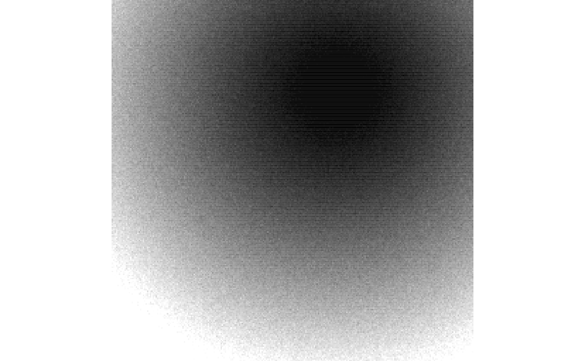
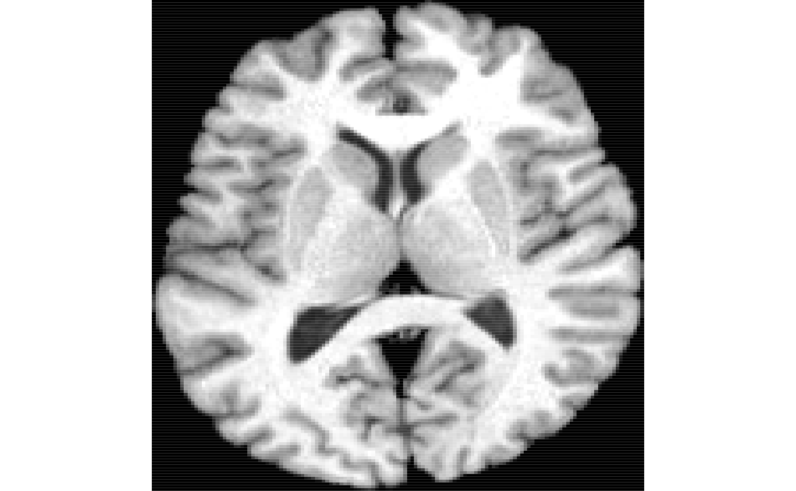
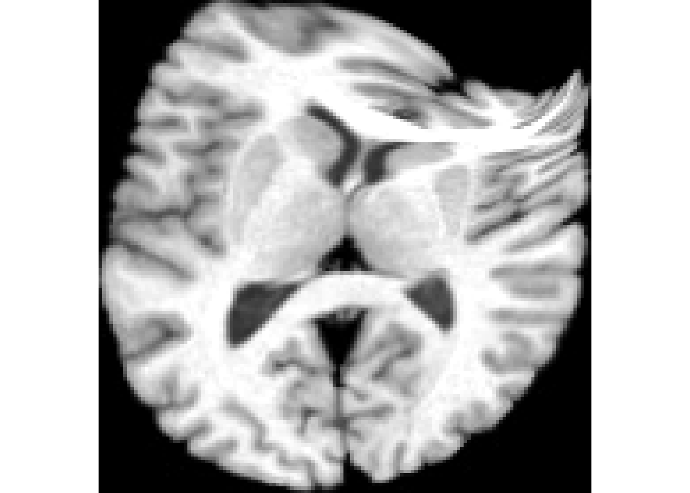
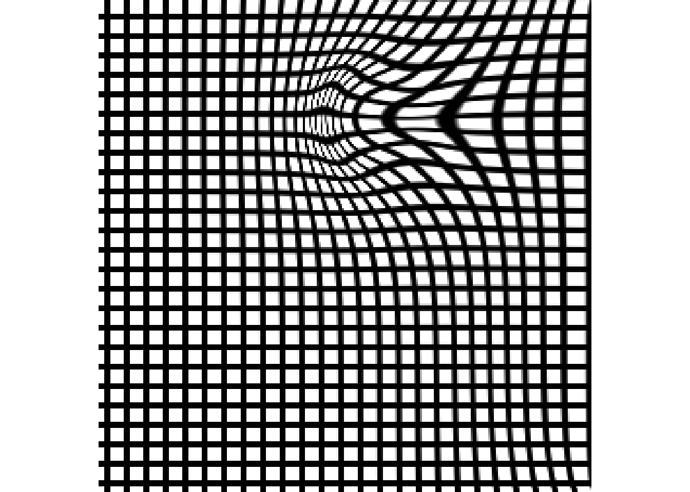

deformationSimulation.RmdA binary image defines the “potential” for deformation.
## Loading required package: ANTsRCore##
## Attaching package: 'ANTsRCore'## The following object is masked from 'package:stats':
##
## var## The following objects are masked from 'package:base':
##
## all, any, apply, max, min, prod, range, sumimg = antsImageRead( getANTsRData( "r16" ) )
ptmat = matrix( c( 95.5, 95.5, 63.5, 63.5 ), ncol=2 )
mymask = img * 0 + 1
aa = makePointsImage( ptmat, mask = mymask, radius = 16 )
aaDist = iMath( aa, "MaurerDistance") +
makeImage( mymask, rnorm( sum( mymask ), sd=5 ))
plot( aaDist )
## NULLbb = iMath( aa, "MD", 5 )
areg = antsRegistration( aa, aaDist * bb, typeofTransform = "SyNOnly",
synMetric = "demons", synIterations = 15,
flowSigma = 6, totalSigma = 3,
gradStep = 0.2 )
field = antsImageRead( areg$fwdtransforms[ 1 ] )
warpTx = antsrTransformFromDisplacementField( field )
warped = applyAntsrTransform( warpTx, data = img, reference = img)
field = antsImageRead( areg$fwdtransforms[ 1 ] )
warpTx = antsrTransformFromDisplacementField( field )
txlist = list( )
ncomp = 6
for ( i in 1:ncomp ) txlist[[ i ]] = warpTx
warped = applyAntsrTransform(
txlist, data = img, reference = img)Look.

## NULL
## NULLGrid.
f = areg$fwdtransforms[ 1 ]
grid = createWarpedGrid( img, gridStep = 10, gridWidth = 2,
fixedReferenceImage = img, transform = rep( f, ncomp ) )
plot( grid )
## NULLCompute a population mean warp.
poplist = list(
antsImageRead( getANTsRData( "r16" ) ),
antsImageRead( getANTsRData( "r27" ) ),
antsImageRead( getANTsRData( "r30" ) ),
antsImageRead( getANTsRData( "r62" ) ),
antsImageRead( getANTsRData( "r64" ) ),
antsImageRead( getANTsRData( "r85" ) )
)
template = antsImageClone( poplist[[ 1 ]] )
if ( !exists( "reglist" ) ) {
reglist = list( )
for ( i in 1:length( poplist ) ) {
reglist[[ i ]] = antsRegistration( template, poplist[[ i ]], typeofTransform = "SyN" )
}
}
awrp = antsImageRead( reglist[[ 1 ]]$fwdtransforms[1] )
for ( i in 2:length( reglist ) )
awrp = awrp + antsImageRead( reglist[[ i ]]$fwdtransforms[1] )
awrp = awrp * ( -1.0 * gradstep ) / length( reglist )
warpTx = antsrTransformFromDisplacementField( awrp )
txlist = list( )
ncomp = 10
for ( i in 1:ncomp ) txlist[[ i ]] = warpTx
warped = applyAntsrTransform(
txlist, data = template, reference = template )
plot( warped )Curvature flow.
img = antsImageRead( "precuneus.nii.gz" )
msk = thresholdImage( img, 1, Inf )
grad = getNeighborhoodInMask( img, msk, rep(0,img@dimension), get.gradient=T,
physical.coordinates = T, boundary.condition = 'mean')$gradients
kappa = weingartenImageCurvature( smoothImage(img,0.5) ) * msk
# convert grad to channels
glist=list()
for ( k in 1:3 ) {
gradimg1 = msk * 0
gradimg1[ msk == 1 ] = (-1) * grad[k,] * kappa[ msk == 1 ]
glist[[ k ]] = gradimg1
}
field = mergeChannels( glist ) %>% smoothImage( 1.0 )
jac = createJacobianDeterminantImage( img, field )
warpTx = antsrTransformFromDisplacementField( field * 0.5 / max( abs( field ) ) )
warplist = list( )
for ( i in 1:20 )
warplist[[ i ]] = warpTx
warped = applyAntsrTransform( warplist, data=img, reference=img )
# antsImageWrite( warped , '/tmp/temp.nii.gz' )